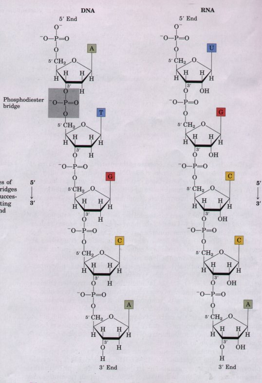
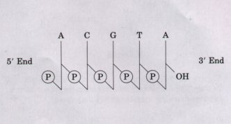
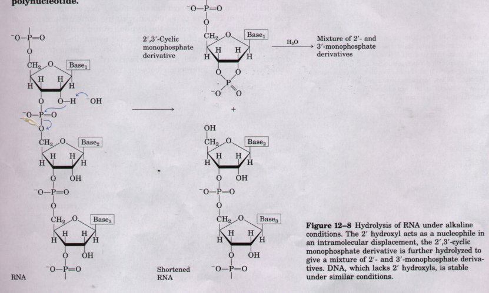
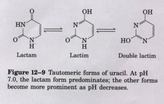
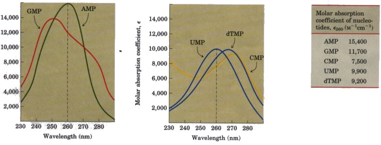
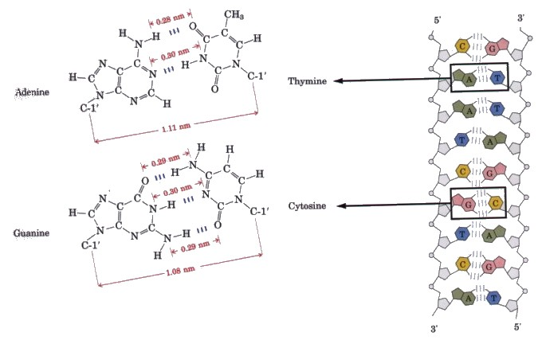

The successive nucleotides of both DNA and RNA are covalently linked through phosphate-group "bridges." Specifically, the 5'-hydroxyl group of one nucleotide unit is joined to the 3'-hydroxyl group of the next nucleotide by a phosphodiester linkage (Fig. 12-7). Thus the covalent backbones of nucleic acids consist of alternating phosphate and pentose residues, and the characteristic bases may be regarded as side groups joined to the backbone at regular intervals. Also note that the backbones of both DNA and RNA are hydrophilic. The hydroxyl groups of the sugar residues form hydrogen bonds with water. The phosphate groups in the polar backbone have a pK near 0 and are completely ionized and negatively charged at pH 7; thus DNA is an acid. These negative charges are generally neutralized by ionic interactions with positive charges on proteins, metal ions, and polyamines. |
 Figure 12-7 The covalent backbone structures of 5' DNA and RNA, showing the phosphodiester bridges(one of which is shaded in the DNA) linking successive nucleotide units. The backbone of alternating 3' pentose and phosphate groups of both DNA andRNA is highly polar. |

All the phosphodiester linkages in DNA and RNA strands have the same orientation along the chain (Fig. 12-7), giving each linear nucleic acid strand a specific polarity and distinct 5' and 3' ends. By definition the 5' end lacks a nucleotide at the 5' position, and the 3' end lacks a nucleotide at the 3' position (Fig. 12-7). Other groups (most often one or more phosphates) may be present on one or both ends.The covalent backbone of DNA and RNA is subject to slow, nonenzymatic hydrolysis of the phosphodiester bonds. In the test tube, RNA is hydrolyzed rapidly under alkaline conditions, but DNA is not; the 2'-hydroxyl groups in RNA (absent in DNA) are directly involved in the process. Cyclic 2',3'-monophosphates are the first products of the action of alkali on RNA, and are rapidly hydrolyzed further to yield a mixture of 2'- and 3'-nucleoside monophosphates (Fig. 12-8).
The nucleotide sequences of nucleic acids can be represented schematically, as illustrated (at right) by a segment of DNA having five nucleotide units. The phosphate groups are symbolized by (P) and each deoxyribose by a vertical line. The carbons in the deoxyribose are represented from 1' at the top to 5' at the bottom of the vertIcal line (even though the sugar is always in its closed-ring /3-furanose form in nucleic acids). The connecting lines between nucleotides (through (Pi)) are drawn diagonally from the middle (3') of the deoxyribose of one nucleotide to the bottom (5') of the next. By convention, the structure of a single strand of nucleic acid is always written with the 5' end at the left and the 3' end at the right; i.e., in the 5'→3' direction. Some simpler representations of the pentadeoxyribonucleotide illustrated are pA-C-G-T-AoH, pApCpGpTpA, and pACGTA. A short nucleic acid is referred to as an oligonucleotide. The definition of "short" is somewhat arbitrary, but the term oligonucleotide is often used for polymers containing 50 or fewer nucleotides. A longer nucleic acid is called a polynucleotide.

Figure 12-8 Hydrolysis of RNA under alkaline conditions. The 2' hydroxyl acts as a nucleophile in an intramolecular displacement, the 2',3'-cyclic monophosphate derivative is further hydrolyzed to give a mixture of 2'- and 3'-monophosphate derivatives. DNA, which lacks 2' hydroxyls, is stable under similar conditions.

The bases have a variety of chemical properties that affect the structure, and ultimately the function, of nucleic acids. Free pyrimidines and purines are weakly basic compounds, and are thus called bases. The purines and pyrimidines common in DNA and RNA are highly conjugated molecules (see Fig. 12-2). This property has important ef fects on the structure, electron distribution, and light absorption of nucleic acids. Resonance involving many atoms in the ring gives most of the bonds a partially double-bonded character. One result is that pyrimidines are planar molecules; purines are very nearly planar, with a slight pucker. Free pyrimidine and purine bases may exist in two or more tautomeric forms depending upon the pH. Uracil, for example, occurs in lactam, lactim, and double lactim forms (Fig. 12-9). The structures of the purines and pyrimidines shown in Figure 12-2 are the tautomers predominating at pH 7.0. Again as a result of resonance, all of the bases absorb UV light, and nucleic acids are characterized by a strong absorption at wavelengths near 260 nm (Fig. 12-10).
Figure 12-10 The absorption spectra of the common nucleotides and their molar absorption coefficients at 260 nm and pH 7.0 (ε260). The spectra of the corresponding ribonucleotides and deoxyribonucleotides, as well as the nucleosides, are essentially identical. When mixtures of nucleotides are present, the wavelength at 260 nm (dashed vertical lines) is used for measurements.The Properties of Nucleotide Bases Affect the Structure of Nucleic Acids
The purines and pyrimidines are also hydrophobic and relatively insoluble in water at the near neutral pH of the cell. At acidic or alkaline pH the purines and pyrimidines become charged, and their solubility in water increases. Hydrophobic stacking interactions in which two or more bases are positioned with the planes of their rings parallel (similar to a stack of coins) represent one of two important modes of interaction between two bases. The stacking involves a combination of van der Waals and dipole-dipole interactions between the bases. These base-stacking interactions help to minimize contact with water and are very important in stabilizing the three-dimensional structure of nucleic acids, as described later. The close interaction between stacked bases in a nucleic acid has the effect of decreasing the absorption of UV light relative to a solution with the same concentration of free nucleotides. This is called the hypochromic effect.
The most important functional groups of pyrimidines and purines are ring nitrogens, carbonyl groups, and exocyclic amino groups. Hydrogen bonds involving the amino and carbonyl groups are the second important mode of interaction between bases. Hydrogen bonds between bases permit a complementary association of two and occasionally three strands of nucleic acid. The most important hydrogen-bonding patterns are those defined by James Watson and Francis Crick in 1953, in which A bonds specifically to T (or U) and G bonds to C (Fig. 12-11). These two types of base pairs predominate in double-stranded DNA and RNA, and the tautomers shown in Figure 12-2 are responsible for these patterns. This specific pairing of bases permits the duplication of genetic information by the synthesis of nucleic acid strands that are complementary to existing strands, as we shall discuss later in this chapter.

Figure 12-11 Hydrogenbonding patterns in the base pairs defined by Watson and Crick.